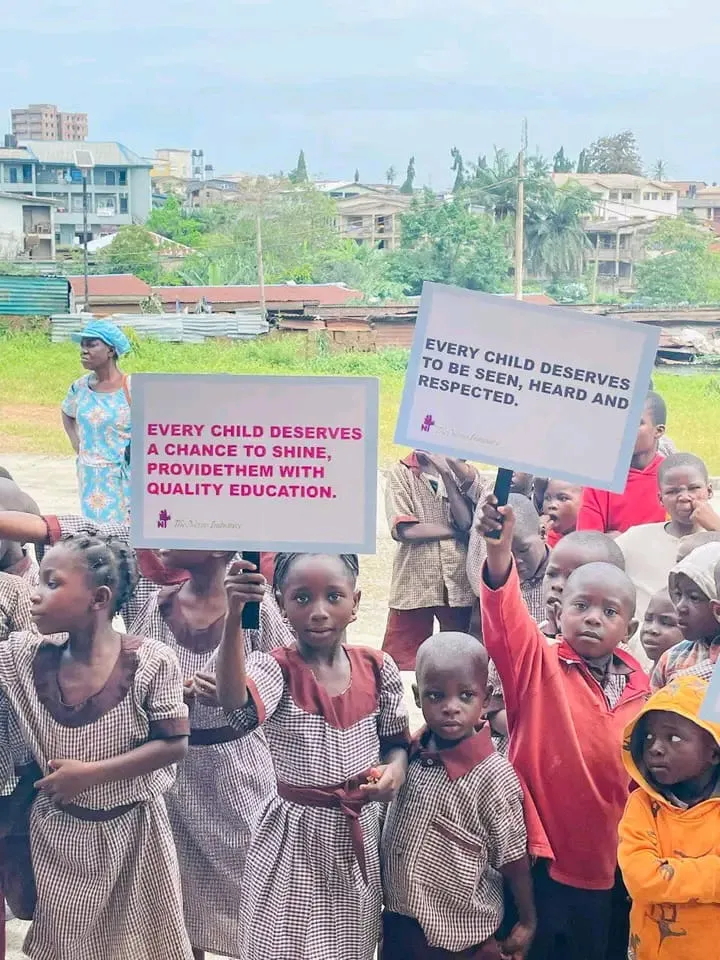
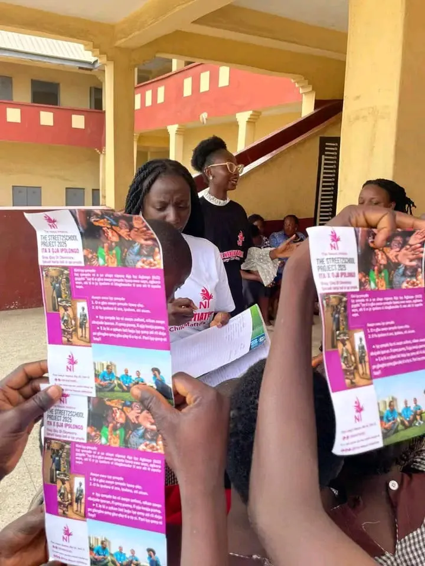
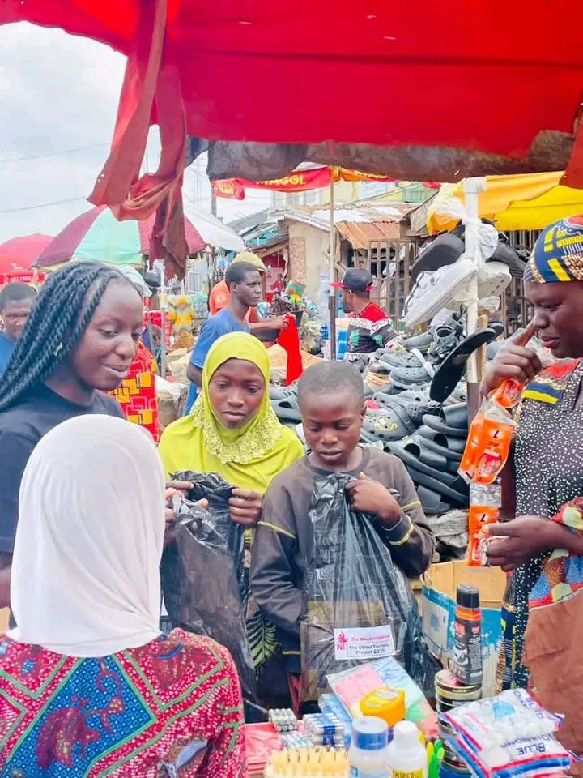
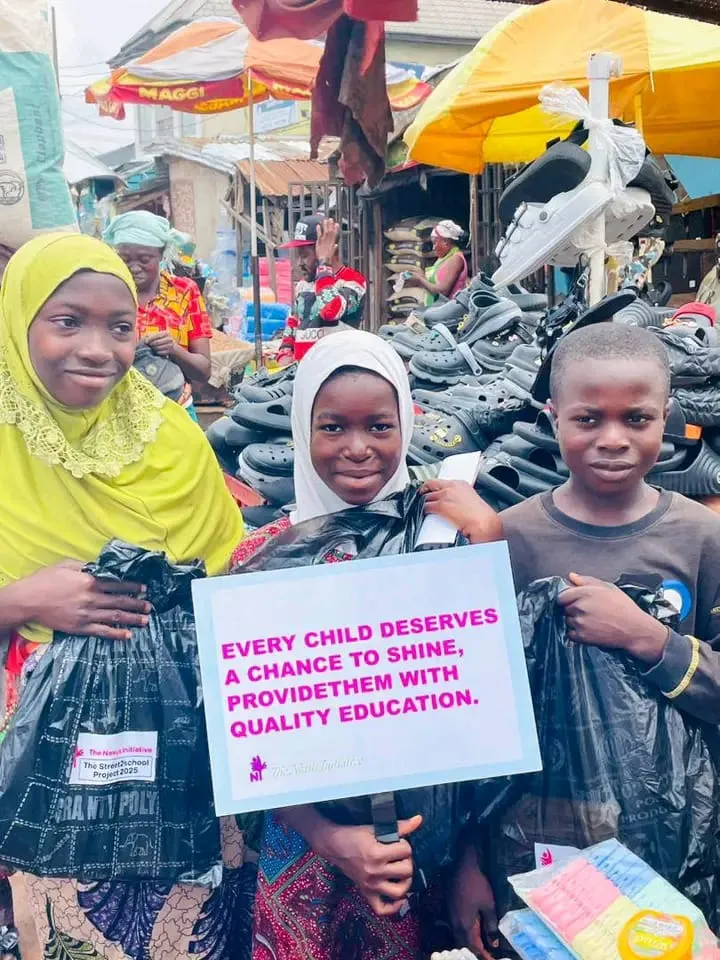

Street2School Project 2025
Theme: Unshackling Education, a fight against child labour.
Every child deserves access to quality education, regardless of their ethnicity or religion. No child should be subjected to child labour. Street2School Project 2025 is our campaign to bring that message to children, parents and traders, and to move children from the street to the classroom.
Our team took the campaign to schools and local markets with placards and flyers, some written in Yoruba, so the message could be heard in people’s own language. #SaveAChild #SaveAFuture



